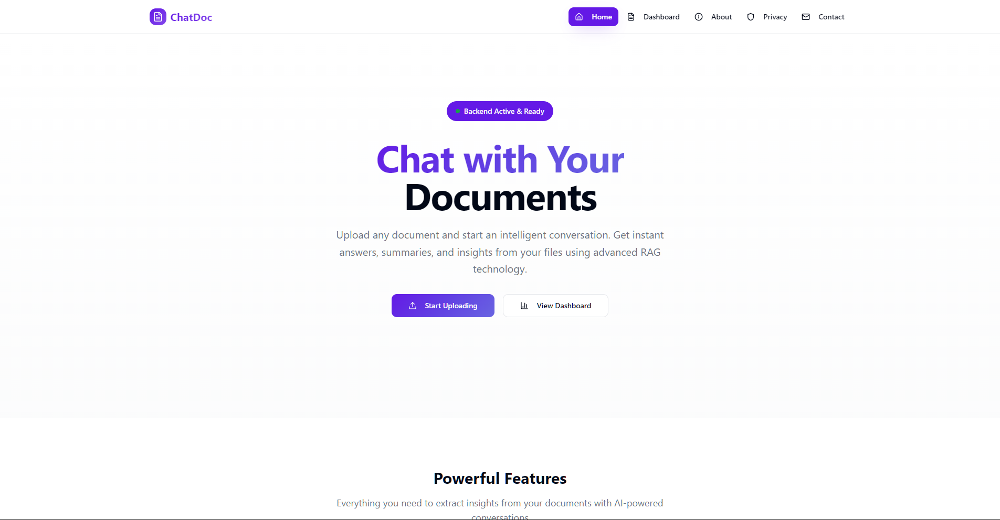
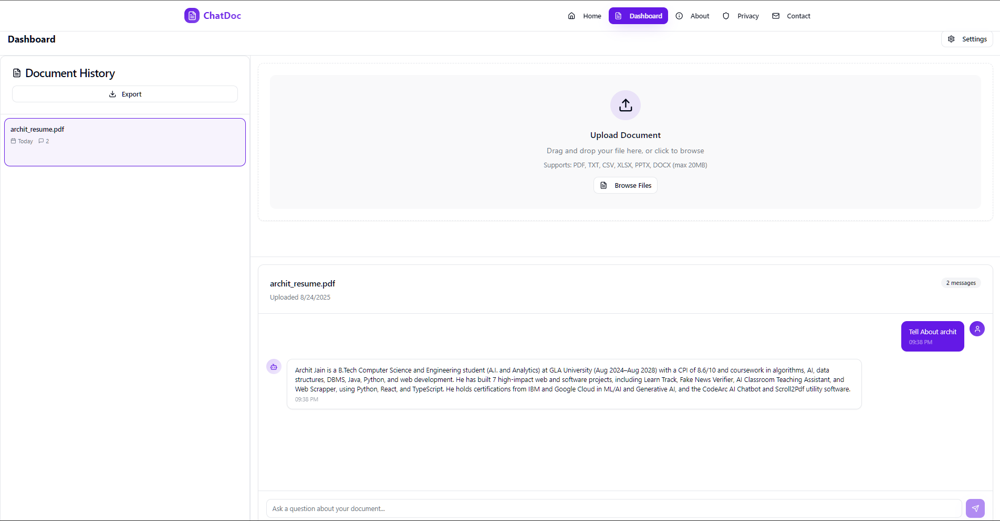
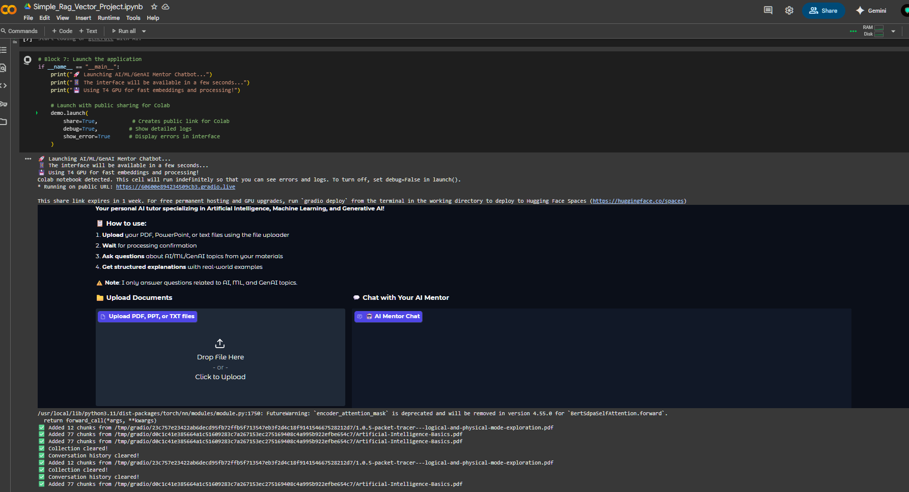
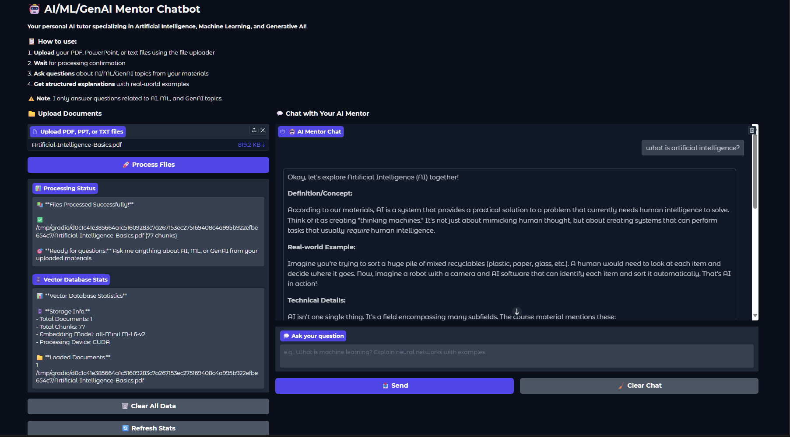
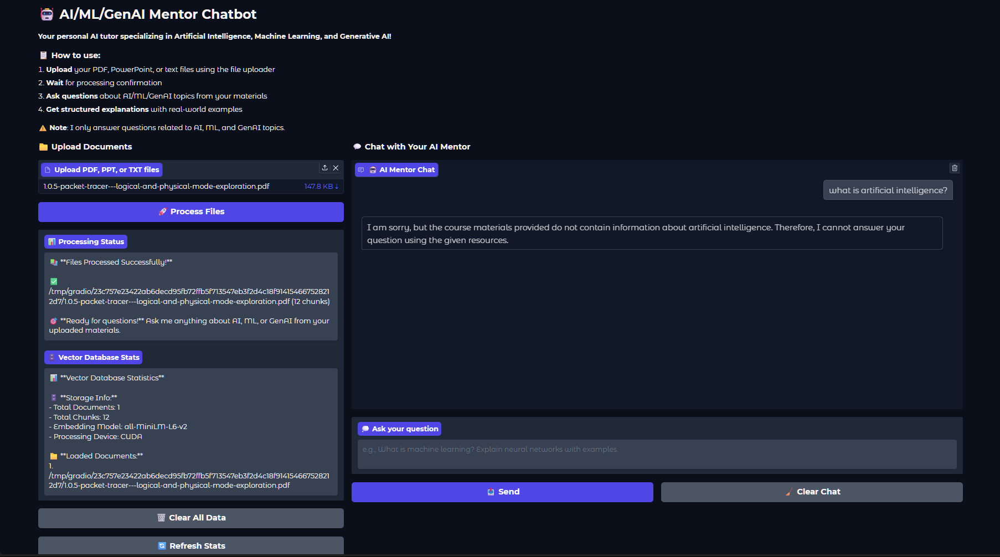

RAG Projects: ChatDoc + AI/ML/GenAI Mentor Chatbot


GitHub: 0xarchit/ChatDoc
GitHub: 0xarchit/DocumentChat-Simple-Rag-VectorDB-Project
Page Contents
-
ChatDoc Overview Preview Architecture Features Tech Stack Getting Started API Reference Future Goals
-
AI/ML/GenAI Mentor Chatbot Running in Google Colab Preview Basic Working Usage Clearing Data
ChatDoc
GitHub: 0xarchit/ChatDoc
Live Demo: https://chatdoc.0xarchit.is-a.dev


A unified retrieval-augmented generation (RAG) document API and web interface, powered by FastAPI, React, Vite, Milvus, and MistralAI.
Overview
ChatDoc is a web application enabling users to upload documents, extract and chunk text, store embeddings in Milvus, and query with state-of-the-art LLMs. It provides both a REST API and a web-based interface for seamless integration.
Preview
 
Architecture
flowchart TB
subgraph Frontend
UI[React & Vite] -->|REST API| API(FastAPI)
end
subgraph Backend
API --> Extract[Text Extraction]
Extract --> Chunk[Text Chunking]
Chunk --> Embed[MistralAI Embedding]
Embed --> Store[Milvus Vector Store]
API --> Retrieve[Retrieval]
Retrieve --> LLM[ChatOpenAI]
LLM --> Store
end
Store -.->|Query Results| APIFeatures
- Upload PDF, TXT, CSV, XLSX, PPTX, DOCX files via API or web form
- Automatic text extraction and chunking (500 tokens, 50 overlap)
- Embedding with MistralAI Embeddings & storage in Milvus (Zilliz)
- Retrieval and response generation via OpenAI-compatible LLM
- Real-time, responsive React UI with upload, history, and settings
- Per-request overrides for API keys, endpoints, and collections
- Admin endpoints for deleting uploads or clearing the vector store
Tech Stack
- Backend: FastAPI, Python, PyPDF2, python-pptx, python-docx, Pandas, Milvus
- Frontend: React, Vite, TypeScript, Tailwind CSS
- Embeddings: MistralAI
- Vector Database: Milvus (Zilliz Cloud)
- LLM: OpenAI-compatible ChatOpenAI via LangChain
Getting Started
Prerequisites
- Node.js >= 16 and npm/yarn
- Python >= 3.9
- Docker (optional)
- Milvus or Zilliz Cloud credentials
- MistralAI & OpenAI API keys
Backend Setup
cd Backend
copy .env.example .env
# Edit .env and set:
# MISTRAL_API_KEY, ZILLIZ_URI, ZILLIZ_TOKEN, HF_TOKEN (optional), COLLECTION_NAME
pip install -r requirements.txt
uvicorn main:app --reloadFrontend Setup
cd Frontend
npm install
npm run devDocker (Optional)
# Build and run backend container
docker build -t chatdocapi-backend .
docker run --rm -p 8080:8080 \
-e MISTRAL_API_KEY=$env:MISTRAL_API_KEY \
-e ZILLIZ_URI=$env:ZILLIZ_URI \
-e ZILLIZ_TOKEN=$env:ZILLIZ_TOKEN \
-e ZILLIZ_COLLECTION_NAME=$env:ZILLIZ_COLLECTION_NAME \
chatdocapi-backendAPI Reference
1) POST /upload
- Description: Upload document and store embeddings.
- Content-Type: multipart/form-data
- Fields:
file(required)mistral_api_key,zilliz_uri,zilliz_token,collection_name(optional)
- Responses:
200:{ "upload_id": "<uuid>" }400: errors (no file, extraction failure)413: file too large
2) POST /query
- Description: Retrieve and answer based on stored chunks.
- Content-Type: application/json
- Body:
{ "question": "string", "upload_id": "string", ...overrides } - Responses:
200:{ "answer": "<generated answer>" }400: invalid body500: generation error
3) DELETE /delete/
- Description: Remove all vectors for a given upload.
- Params:
upload_idpath, overrides as query params - Response:
{ "status": "deleted" }
4) GET /deleteall
- Description: Clear entire vector store.
- Query:
password(native admin) or per-request overrides - Response:
{ "status": "all_deleted" }
Future Goals
- Streaming responses from the model to improve perceived latency and UX.
- Better OCR and robust file parsing for scanned PDFs and more file formats.
- Pluggable support for multiple vector stores (Milvus, FAISS, Pinecone, etc.).
- Increase upload and context limits (larger files, fewer artificial word/chunk restrictions).
- Personalization with login/signup, per-user profiles, metadata, and tags.
- Expand supported AI models/providers and allow per-request model selection.
AI/ML/GenAI Mentor Chatbot
GitHub: 0xarchit/DocumentChat-Simple-Rag-VectorDB-Project
This vibe coded project provides an AI/ML/GenAI Mentor Chatbot built with Gradio, LangChain, ChromaDB, and Google Gemini. You can run the notebook in Google Colab to interact with the chatbot.
Running in Google Colab
-
Open the notebook:
- Import the notebook into your Google Drive or GitHub repository.
- Open Google Colab and select File > Open notebook.
- Under the Google Drive, GitHub, or Upload tab, locate your notebook (
main.ipynb) and open it.
-
Install dependencies:
- Colab will automatically install required packages when running the first cell.
-
Run all cells:
- In Google Colab, select Runtime > Run all to execute every cell sequentially.
- This will set up the environment, process documents, initialize the chatbot, and launch the Gradio interface.
Alternatively, you can use the public Colab link:
Note
Also add your Gemini API key in Colab Secrets before running.
Preview



Basic Working
This project combines several modern AI tools to create an interactive mentor chatbot:
- Gradio UI: Provides a simple, user-friendly web interface for uploading documents and chatting with the AI mentor.
- ChromaDB (Vector Database): Stores document chunks as vector embeddings, enabling fast and relevant retrieval of information based on your questions.
- all-MiniLM-L6-v2 Embedding Model: Converts text from your documents and queries into numerical vectors, allowing semantic search and matching.
- Google Gemini (Generative AI): Generates detailed, structured answers using both retrieved document context and its own AI/ML/GenAI knowledge.
How it works:
- Upload your PDF, PPT, or TXT files using the Gradio interface.
- The files are split into chunks and embedded using the all-MiniLM-L6-v2 model.
- ChromaDB stores these embeddings for efficient retrieval.
- When you ask a question, the system finds the most relevant document chunks and sends them, along with your question, to Gemini.
- Gemini generates a comprehensive answer, referencing your materials and providing real-world examples.
Usage
- Upload your PDF, PPT, or TXT files using the notebook’s upload section.
- After processing, ask questions about AI, ML, or GenAI topics.
- The chatbot will provide structured, detailed responses with real-world examples based on provided material only.
Clearing Data
- To clear all uploaded documents and chat histor��������������������������������������������������������